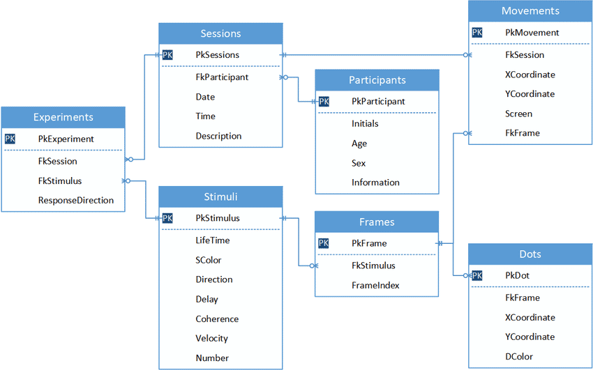
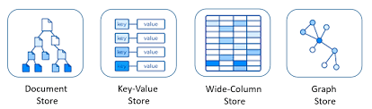
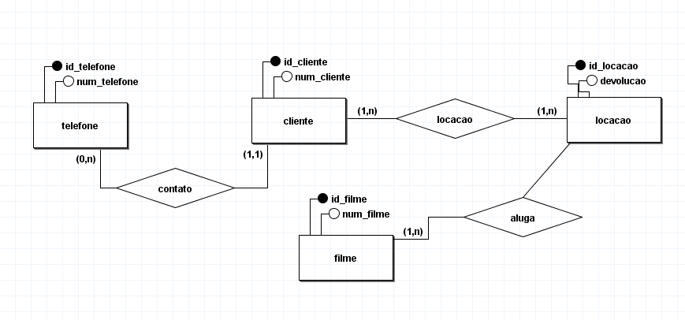
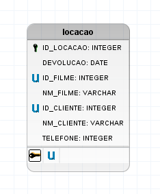
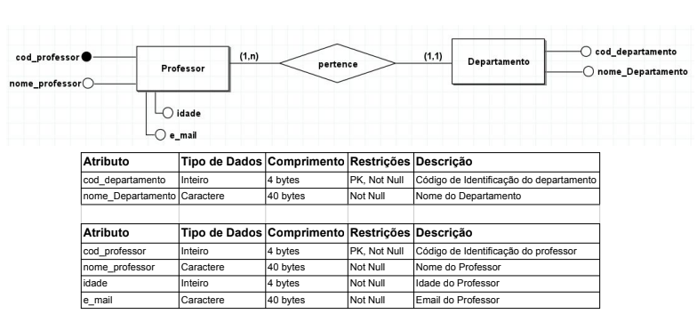

Banco de Dados
Um banco de dados é uma coleção organizada de dados que pode ser facilmente acessada, gerenciada e atualizada. Ele é fundamental para armazenar informações de maneira estruturada e eficiente, permitindo que sistemas e aplicativos recuperem e manipulem esses dados de acordo com as necessidades.
Tipos de Bancos de Dados
Relacional
Bancos de dados relacionais são sistemas que organizam os dados em tabelas, onde cada tabela contém informações sobre um tipo específico de entidade, como clientes ou produtos. Esses bancos utilizam a linguagem SQL (Structured Query Language) para realizar consultas e manter a integridade dos dados por meio de chaves primárias e estrangeiras, que estabelecem relações entre as tabelas.
Não Relacional
Bancos de dados não relacionais, ou NoSQL, são sistemas de armazenamento de dados que não utilizam tabelas para organizar as informações. Eles são ideais para lidar com grandes volumes de dados e cenários onde a estrutura dos dados pode variar. Esses bancos são amplamente usados em aplicações como redes sociais e grandes lojas online, onde a flexibilidade e escalabilidade são essenciais. Exemplos populares de bancos de dados NoSQL incluem MongoDB, Redis e Cassandra.
Diagramas
Conceitual - DER
Um Diagrama Entidade-Relacionamento (DER) é uma representação visual de um banco de dados que ilustra como as entidades (ou tabelas) estão interconectadas, sem detalhar os campos específicos de cada uma. Ele é utilizado na fase de modelagem e planejamento do banco de dados, ajudando a entender a estrutura geral e as relações entre os dados antes da implementação.
Lógico - MER
O Modelo Entidade-Relacionamento (MER) é uma versão mais detalhada e lógica do DER, que não apenas mostra as entidades e seus relacionamentos, mas também define os atributos de cada entidade e seus tipos de dados. Ele descreve como os dados serão armazenados no banco de dados, fornecendo uma visão mais completa e precisa da estrutura do banco e das interações entre as informações.
Quais os banco de dados que a empresa trabalha?
Nossa empresa trabalha com MySQL

O que é um dicionário de dados?
Um dicionário de dados é um documento que fornece uma descrição detalhada de cada elemento de um banco de dados, incluindo os nomes das tabelas, campos, tipos de dados e relacionamentos. Ele ajuda desenvolvedores e administradores a entenderem a estrutura do banco de dados, garantindo uma visão clara e padronizada das informações, o que facilita a gestão, manutenção e desenvolvimento de sistemas baseados nesses dados.
